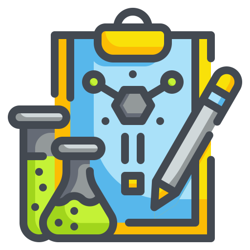
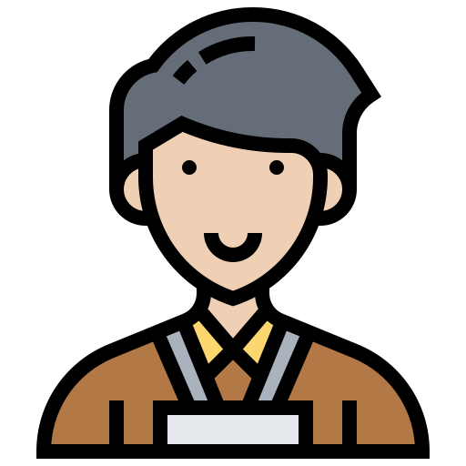

Olá! Meu nome é Gazstao.
Sou apaixonado por computadores, máquinas e seres vivos.
Moro em Curitiba, e atuo na manutenção de equipamentos médicos.
Habilidades

Tecnologia
Experiência com hardware e software. Manutenção de Sistemas Médico Hospitalares,
configuração de Workstations, sistemas RIS/PACS, aferição de desfibriladores, Arduino.
Experiência com equipamentos médicos GE e Elscint.
Programação
Python, Java, HTML e CSS, MySQL, Arduino e tudo o que entender código.
Luiz Gastao de Lara Junior

Experiência:
1998 - Atual:
Aztech Alta Tecnologia Sociedade Simples
Manutenção de equipamentos de Medicina Nuclear, Workstations, PACs e sistemas de informação.
1997 - 1998: Radians - Zilton da Conceição ME
Manutenção de equipamentos de tomografia computadorizada, ressonância magnética e medicina nuclear Elscint,
bem como workstations e impressoras de vídeo.
1995 - 1996: Banestado
Estágio do curso Técnico em Eletrônica no Departamento de Manutenção e Automação. Manutenção de equipamentos
de informática, impressoras, sistemas de terminais de vídeo entre outros.

Cursos e Eventos:
Participação no
Nasa SpaceApps Challenge 2019, com o projeto
HexaGoal
Curso Gestão da Inovação - Sebrae
Curso 5s para Pequenos Negócios - Sebrae
Curso Fundamentos em Gestão de TI - FGV
Curso Fundamentos do Desenvolvimento de Software - Microsoft Virtual Academy
Curso de Programação Java Micro Edition - UTF-PR
Curso Python Mega Course - Udemy
Certificado Python Level 1 - Cambridge Certification Authority
Curso Banco de Dados MySQL
Curso Data Science: Visualização de Dados com Python
Projeto e construção de
Veículo Guiado Automaticamente - AGV
- Trabalho de Conclusão de Curso Técnico apresentado na Feira de Projetos Ensitec 2011 (
Vista do Veículo -
Testes na Ensitec -
Ajustes )
Curso PACs Synapse Hands-On - ORD 2006 - Fujifilm
Participação no Observatório de Radiologia Digital - ORD 2006
Informações Complementares:
➙ Formador da turma de educadores do Curso de Redes Domésticas - CDI - PR (voluntário).
➙ Participação na implementação de sistema HIS/RIS Tasy Philips.
➙ Realização de manutenção preventiva e corretiva em equipamentos de tomografia computadorizada, ressonância magnética, medicina nuclear, placas eletrônicas,
sistemas de terminais e de informática e acompanhamento de instalações e manutenções de equipamentos médico hospitalares.
➙ Desenvolvimento de sites de internet.
➙ Implementação de sistemas PACs com Osirix e Horus.
➙ Inglês fluente.
➙ Responsável pela manutenção de equipamentos de Medicina Nuclear e sistemas de informação. Com conhecimentos em software e hardware.
Capaz de efetuar manutenção, aferição e desenvolvimento de circuitos eletrônicos, equipamentos médico hospitalares e sistemas de informação.
➙ Conhecimentos em programação e desenvolvimento de sistemas com Java, .Net, Python, SQL, mecânica, robótica, microcontroladores, sistemas CLP, máquinas CNC, sistemas pneumáticos,
eletromecânicos, sistemas embarcados e dispositivos especiais.